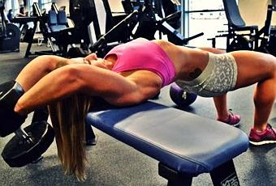
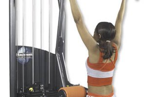
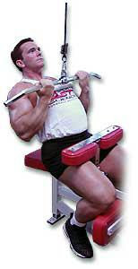

12 mejores ejercicios de espalda para hacer en casa - ¡Muy efectivos!
2021.12.08 10:40
Descubre Animales Artes y manualidades Belleza Comida Deporte Educación Fiesta Hogar Motor Negocios Ocio Relaciones Salud Tecnología Compartir Compartir en: unCOMO Deporte Fitness Hacer fitness Entrenamiento de fuerza Ejercicios de espalda en casa
Ejercicios de espalda en casa
Por Paloma López . Actualizado: 8 noviembre 2021Para mantener una vida activa y saludable es imprescindible tener una dieta equilibrada y, además, realizar deporte frecuentemente. Cada vez es más común recurrir, sobre todo en las grandes ciudades, a gimnasios y a centros de entrenamiento para tener un cuerpo en plena forma. Sin embargo, hay ejercicios que puedes hacer desde la comodidad de tu casa de una manera sencilla y eficaz.
¿Quieres conocer los 12 mejores ejercicios de espalda para hacer en casa ? En este nuevo artículo de unCOMO te proporcionamos todos los ejercicios que debes saber para tonificar los músculos. Solo necesitarás unas gomas, una banda elástica o, en su defecto, unas simples toallas. ¡Vamos allá!
También te puede interesar: Ejercicios para la espalda Índice Dominadas deslizantes Remo invertido Plancha abdominal Remo con banda elástica Dominada con banda elástica Pull over con banda elástica Encogimiento de hombros con banda elástica Face Pull con gomas Face pull con banda elástica Ejercicios con toalla Rodillas al pecho Balasana o postura del niñoDominadas deslizantes
Pues bien, este ejercicio de las dominadas deslizantes es uno de los más reputados a la hora de fortalecer y tonificar la espalda . Generalmente necesitarías una barra o una rueda para deslizarte, pero los ejercicios de espalda en casa con barra no son comunes, es por eso que en esta ocasión, podrás hacerlo simplemente con tu cuerpo.
Sigue estos pasos para realizar dominadas deslizantes :
Colócate en el suelo bocabajo con las palmas de las manos hacia abajo también. Utiliza las manos como ventosas y desliza lentamente el cuerpo hacia delante y hacia atrás haciendo fuerza con la espalda.Remo invertido
Este ejercicio es ideal para ejercitar el tirón horizontal , debes hacer fuerza con la espalda para levantar el propio peso. Necesitarás una silla o una mesa.
Pues bien, no te pierdas estos pasos para realizar el remo invertido :
Colócate debajo de la silla o de la mesa y sujeta con las dos manos la superficie. Levanta el peso con la ayuda de los brazos y los músculos de la espalda.Plancha abdominal
Este ejercicio no necesita movimiento, ya que la fuerza se genera con la resistencia del propio cuerpo . En esta ocasión trabajarás los músculos laterales de la espalda. Los ejercicios para la espalda deben realizarse correctamente, si no podrías provocar una lesión.
Sigue estos pasos para realizar el ejercicio de plancha abdominal :
Colócate boca arriba con los pies apoyados en el suelo y la cadera levantada. La idea es colocar los brazos en el suelo con el antebrazo en lo alto y, con la ayuda de los brazos y la espalda, ejerce una fuerza que consiga elevar ligeramente el torso del suelo. Mantente en esta posición unos segundos y repite la serie.Remo con banda elástica
El ejercicio del remo es uno de los más completos a la hora de ejercitar la espalda , pero a pesar de que la máquina idónea solo se encuentra en el gimnasio, resulta bastante fácil reproducir el movimiento en casa si se cuenta con unas bandas elásticas. A pesar de que los ejercicios de espalda en el gym son más fáciles de realizar por las máquinas específicas, estas herramientas que te proponemos también son fáciles y económicas de conseguir, además, tienen muchas utilidades.
Sigue todos los pasos para realizar el remo con banda elástica :
Solo deberás sentarte en el suelo con las piernas estiradas. Coloca la banda en tus pies y, con la espalda recta, tirar de la banda para atrás simulando el movimiento del remo. Repite la serie 10 veces y haz un descanso cuando termines.Dominada con banda elástica
En lugar de usar una barra sobre la que cargar el cuerpo, en esta ocasión, colocarás la banda elástica en una posición por encima de la cabeza .
Sigue los pasos para realizar dominadas con banda elástica :
Coloca la banda en una escalera o en un gancho, concretamente encima de la cabeza. Con las dos manos, ejerce fuerza hacia abajo fortaleciendo la espalda. Debes tener la espalda recta para realizar este ejercicio. ¡Cuida al máximo tu postura para evitar lesiones!Pull over con banda elástica
En esta ocasión, necesitarás una silla sobre la que reclinarte , además, también debes disponer de un peso para sujetar la banda elástica, puede ser el sofá.
No te pierdas estos pasos para realizar pull over con banda elástica :
Debes colocar la silla enfrente del sofá y colocarte boca arriba con la cabeza del lado del sofá. Con las manos sujeta los dos lados de la banda enganchada por el sofá y tira de ellos hasta pasarlos por la altura del esternón.Encogimiento de hombros con banda elástica
Los ejercicios de espalda con mancuernas son también muy útiles para tonificar los músculos de la espalda, pero en esta ocasión, te mostramos ejercicios que puedes realizar en casa sin material costoso , en esta ocasión necesitarás la banda elástica. ¡Es uno de los ejercicios más sencillos que puedes hacer con la banda elástica!
Ten en cuenta los siguientes pasos fáciles para realizar encogimiento de hombros :
Tan solo deberás colocarte de pie y pisar la banda en la zona central. Con los brazos a los lados del cuerpo, sujeta los dos extremos de la banda. Con la espalda erguida y recta, comienza a hacer encogimiento de hombros.¿Qué te están pareciendo estos ejercicios de espalda en casa sin pesas? ¡Son ideales para hacer en tu hogar!
Face Pull con gomas
Ayudándote de pomo o de una columna , deberás colocar tu goma elástica, o en su defecto, una banda alrededor.
Sigue los pasos para realizar este ejercicio de espalda en casa con gomas :
Agarra los extremos con las manos. En una posición vertical, tira de ella hasta que quede la goma elástica paralela a las orejas. Repite el proceso con la espalda recta.Face pull con banda elástica
Otra de las modalidades de face pull más apropiadas para emplear banda elástica consiste en colocarte en el suelo con las piernas estiradas y con las rodillas levemente dobladas.
Sigue los pasos para realizar el ejercicio face pull con banda elástica :
Coloca la banda debajo de la suela de los pies. Tira con los brazos de los extremos y llévalos por encima de los hombros.Ejercicios con toalla
Si no dispones de ninguna banda o goma elástica, puedes realizar varios de los ejercicios citados con la ayuda de una toalla. Al no ser un elemento elástico, deberás hacer un esfuerzo extra que completará la rutina .
No te pierdas estos pasos para realizar ejercicios con toalla :
Lo único que deberás hacer es tensar la toalla con la fuerza de tus brazos y hombros y simular que es una barra firme para hacer ejercicios como el remo o las dominadas. Coloca la banda elástica encima de la cabeza. Con las dos manos, ejerce fuerza hacia abajo fortaleciendo la espalda.Rodillas al pecho
¿Quieres conocer ejercicios para el dolor de espalda ? Pues bien, si tienes dolores y quieres fortalecerla, es muy importante realizar estiramientos para poder destensar y relajar los músculos contraídos. Señalamos que estos ejercicios de espalda en casa son para mujeres y hombres.
Tan solo debes seguir estos pasos :
Túmbate boca arriba, dobla las rodillas y abrázalas ligeramente contra el pecho. Realiza giros hacia los laterales para relajar la espalda.Balasana o postura del niño
Este ejercicio de espalda baja es muy común en yoga para estirar y fortalecer todos los músculos de la espalda.
No te pierdas los siguientes pasos para realizar la balasana :
Estírate en el suelo y reposa los glúteos sobre los talones. Flexiona el tronco y estira ligeramente hacia delante. Pasa los brazos por encima de la cabeza y estira también.¿Qué te ha parecido este artículo? Señalamos que para hacer bien los ejercicios para la espalda es importante tener en cuenta la posición en todo momento, debes tener la espalda recta para evitar posibles lesiones.
Como has podido comprobar, no hemos utilizado mancuernas ni pesas para realizar los ejercicios, pero si dispones de ellas y quieres realizar ejercicios de espalda en casa con mancuernas, no te pierdas este artículo y descubre cómo hacer ejercicios con mancuernas para la espalda . Y, si además, te preguntas cómo hacer ejercicios de espalda en casa con pesas, te recomendamos este artículo Ejercicios con pesas en casa .
Si deseas leer más artículos parecidos a Ejercicios de espalda en casa , te recomendamos que entres en nuestra categoría de Fitness .
Ejercicios con bandas elásticas para hacer en casa 12 ejercicios con gomas elásticas para brazos y espalda Ejercicios para ponerse en forma en casa Ejercicios de fuerza en casa Lo más visto 1. Nombres para equipos de fútbol 2. Cómo hacer crecer los glúteos 3. Cuántas calorías quemo en bicicleta 4. Cómo tomar levadura de cerveza para aumentar masa muscular 5. Cuántas calorías hay que quemar al día para adelgazar 6. Por qué dan ganas de vomitar al hacer ejercicio 7. 6 batidos de proteínas caseros para aumentar masa muscular 8. Cómo eliminar los rollitos de la cinturaEscribir comentario
¡Quiero ver más artículos parecidos! Ejercicios de espalda en casa 1 de 11 Ejercicios de espalda en casa X unCOMO Deporte Fitness Hacer fitness Entrenamiento de fuerza Ejercicios de espalda en casa Volver arriba Redes sociales © www.mundodeportivo.com/uncomo 2021 Quiénes somos Contacta con nosotros Términos y Condiciones Política de privacidad Política de cookies Área de privacidad- Los mejores ejercicios para fortalecer la espalda y corregir la .
- Ejercicios de espalda en casa - Mundo Deportivo
- Los 15 mejores ejercicios para una espalda y dorsales en V
- Ejercicios para fortalecer la espalda sin hacernos daño
- 5 ejercicios básicos para lograr una espalda descomunal - AS .
- Los mejores ejercicios para acabar con el dolor de espalda
- 6 ejercicios con el propio peso para una espalda fuerte
- Los 11 mejores ejercicios para entrenar tu espalda en el .
- Guía de ejercicios para la parte baja de la espalda (Back .
- Ejercicios para la espalda en 15 minutos diarios - Mayo Clinic
- Los mejores ejercicios para fortalecer la espalda y corregir la .
en casa · Pues bien, este ejercicio de las dominadas deslizantes es uno de los más reputados a la hora de fortalecer y . - Ejercicios de espalda en casa - Mundo Deportivo
- Los 15 mejores ejercicios para una espalda y dorsales en V
- Ejercicios para fortalecer la espalda sin hacernos daño
- 5 ejercicios básicos para lograr una espalda descomunal - AS .
- Los mejores ejercicios para acabar con el dolor de espalda
- 6 ejercicios con el propio peso para una espalda fuerte
- Los 11 mejores ejercicios para entrenar tu espalda en el .
- Guía de ejercicios para la parte baja de la espalda (Back .
- Ejercicios para la espalda en 15 minutos diarios - Mayo Clinic
en casa · Pues bien, este ejercicio de las dominadas deslizantes es uno de los más reputados a la hora de fortalecer y .
  